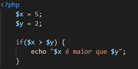

O construtor if permite uma execução condicional de um pedaço de código caso a expressão seja satisfeita (true), e ignorada caso não seja (false). Por exemplo:
No exemplo acima, a expressão resulta em verdadeiro fazendo com que o código dentro do if seja executado.
Podemos estender as verificações caso a primeira expressão (if) retorne falsa. Neste caso, a verificação adicional é feita com a instrução “else if”. No exemplo abaixo, será impresso “Zero”, pois o valor da variável $x é igual a zero. Se o valor atribuído a $x fosse o número inteiro 10, nenhuma das expressões verificadas seriam satisfeitas, e o código do bloco else seria executado.
Para executarmos um código caso a mesma expressão resulte em falso. O exemplo abaixo imprimirá “5 não é maior que 7”:
A estrutura switch servirá quando tivermos uma variável que poderá receber diversos valores durante a execução e para cada valor tomaremos uma decisão. Veja o exemplo abaixo:
NOTA: a instrução break finaliza a execução dessa estrutura.